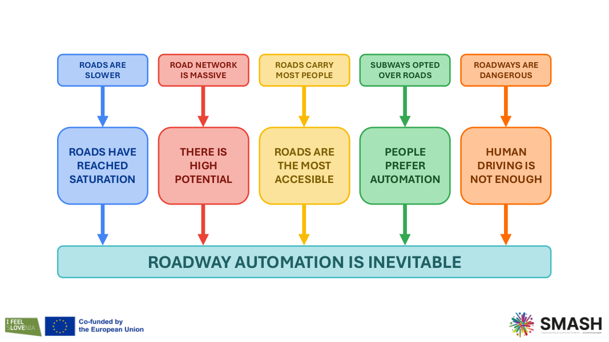
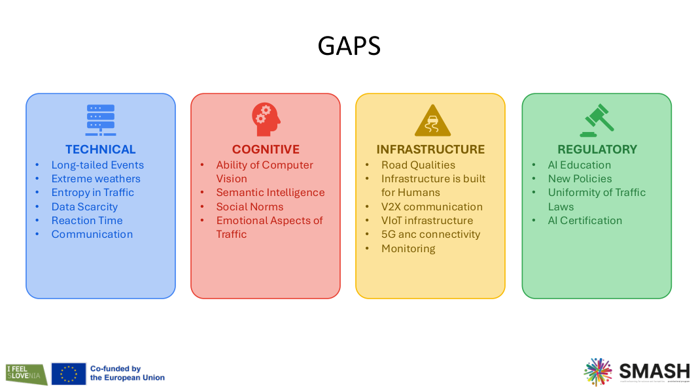
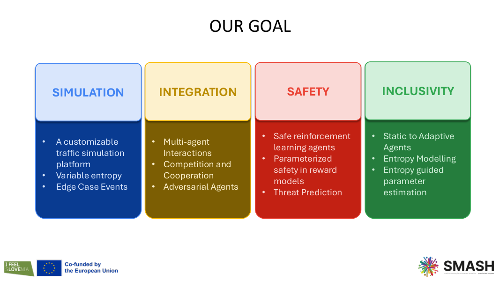

Why the road is next: a research talk on autonomous driving and LANCER
This talk opens LANCER, my postdoctoral project at the University of Ljubljana on teaching vehicles to navigate difficult environments by reinforcement learning, that is, learning from trial, error and reward. It sets the scene: where driving automation stands, what is missing, and which part of the problem we picked. This article follows the slides in order; the full write-up and the slides are on the LANCER page.
Why roads
The talk starts by comparing the ways people move: suburban and urban roads, motorways, subways and metros, and low-speed and high-speed railways. The numbers behind it come from road, rail and safety statistics for 2023 to 2025, from sources such as the World Bank, the OECD, the World Health Organization and the European Commission. One source slide mentions the Commission's preliminary 2026 road-safety statistics, with a split of road fatalities of 53% rural, 38% urban and 8% motorway.
The argument fits on one slide: five observations about roads, such as that the network is massive and that roadways are dangerous, lead to the conclusion that roadway automation is inevitable.

The next slide splits the problem. In rural areas it runs from lane keeping to unmapped roads, with little vehicle-to-everything (V2X) infrastructure. In cities it is the interactive complexity of pedestrians, cyclists and traffic signals.
Levels of automation and a case study
The talk then lays out the six SAE J3016 levels of automation. At level 0 the driver is always in full control. At level 1 the car helps with steering or with speed, not both, and at level 2 with both while the driver supervises constantly. At level 3 it can take over under very specific conditions but may ask the driver to take back control. At level 4 it drives itself within a defined area or conditions, and at level 5 anywhere a human can drive.
Several slides present a case study of the Waymo driving system, with the disclaimer that I am not an authorised spokesperson and show only what Waymo has published. The timeline starts in 2009 with the Google self-driving car project. In 2015 Steve Mahan, who is legally blind, took the first fully self-driving ride on public roads, in Austin, Texas. The sensor slides give each sensor a role: LiDAR is the 3D architect, precise to centimetres and independent of light; the cameras, 13 of them overlapping, are the semantic eye that reads lights and signs and sees obstacles over 500 m away; radar is the weather specialist that measures speed and works through heavy fog, rain and snow.
Gaps, opportunities and threats
The talk groups what is missing into four kinds of gaps. Technical gaps include long-tailed events, extreme weather and data scarcity. Cognitive gaps include semantic intelligence and social norms. Infrastructure gaps include road quality, V2X and 5G. Regulatory gaps include new policies, uniform traffic laws and AI certification.

The opportunities are services such as mobility as a service, logistics, where automated trucks can operate more than 20 hours a day, safety, and a market that is largest in the densest cities. The threats are security, trust, labour and ethics, such as who will be accused or defended after a crash. Two slides survey what exists today: computing and software stacks, and physical test sites.
| Facility | Country | What the slide says it offers |
|---|---|---|
| ZalaZone | Hungary | 250-hectare site with a Smart City zone, high-speed handling and V2X communication testing |
| AstaZero | Sweden | Full-scale independent test environment with multilane and rural road setups for edge cases |
| MIRA Technology Park | UK | Mobility R&D cluster with over 35 global OEMs, cybersecurity testing and a human-centred design centre |
| American Center for Mobility | USA (Michigan) | 500-acre campus with a 2.5-mile high-speed highway loop, tunnels and urban intersections |
| K-City / Gwangju City | South Korea | The city of Gwangju is a regulatory sandbox with 200 software-centric vehicles collecting data around the clock |
| Transpolis | France | A 1:1 scale urban living lab with reconfigurable buildings |
Where LANCER comes in
LANCER develops reinforcement learning systems that train driving agents, with a focus on complex environments with high entropy: changing conditions, other agents and the dynamics of traffic. The talk gives four reasons for choosing reinforcement learning. It copes with the long tail of rare events better than hard-coded rules, it suits dynamic traffic where other agents must be anticipated, it balances safety, efficiency and comfort through one reward function, and it replaces thousands of if-else rules with one learning framework. The slide puts it in one line: we do not want to tell the car how to drive, we want to tell it what good driving looks like.
The agent observes raw sensor data and derived information such as road markings, the positions of pedestrians and vehicles, drivable area and traffic signals. Its actions are continuous, with throttle and brake in [0, 1] and steering in [-1, 1], or a few discrete commands such as stay in lane. It can act at three levels: raw torque and voltage, a waypoint handed to a PID or MPC controller, or a strategic decision. The talk lists reward signals as examples.
| Signal | Kind | Example value |
|---|---|---|
| Reaching the destination | Reward | +1000 |
| Passing a waypoint | Reward | +50 |
| Stopping at a red light | Reward | +10 for each step stopped |
| Staying near the lane centre | Reward | +1.0 when the offset is below a threshold |
| Time consumed | Penalty | -0.1 per unit time |
| Collision | Penalty | -1000 |
| Missing a waypoint | Penalty | -500 |
| Traffic violation | Penalty | -200 |
| Illegal lane change | Penalty | -50 (or -2 if legal but not mandatory) |
The case for simulation follows: crashes cost nothing, many instances run in parallel and faster than real time, and rare accidents can be scripted and repeated. For a policy to carry over to a real car the simulator needs realistic physics, photorealistic rendering and programmable traffic. The talk shows several simulators, including CARLA, SUMO and MetaDrive.
Discussion
The talk is a survey and a plan, not a set of results. The reward values are examples, and the Waymo material is public information, not a measurement of ours. What we take from it is that rare events, changing conditions and other road users are where hand-written rules run out.

The talk ends with four goals. Simulation: a customizable traffic simulation platform with variable entropy and edge-case events. Integration: multi-agent interactions, with competition, cooperation and adversarial agents. Safety: safe reinforcement learning agents, safety parameterized in the reward and threat prediction. Inclusivity: agents that move from static to adaptive, with entropy modelling and entropy-guided parameter estimation. The first concrete step is the data-collection pipeline described in the dataset article, and the same ideas are taught from scratch in the student seminar.
Sources
The figures and tables listed here are taken from the talk cited at the top of this page; the numbers quoted in the text come from it too.
- Figures: Slide 13 of the talk, Slide 43 of the talk, Slide 74 of the talk
Acknowledgements
LANCER is part of the postdoctoral project of Dr. Swarnendu Ghosh at the University of Ljubljana. It is co-funded by the European Union's Horizon Europe research and innovation programme under the Marie Skłodowska-Curie COFUND Postdoctoral Programme, grant agreement No. 101081355 (SMASH), and by the Republic of Slovenia and the European Union from the European Regional Development Fund. Views and opinions expressed are those of the author only and do not necessarily reflect those of the European Union or the European Research Executive Agency. Neither the European Union nor the granting authority can be held responsible for them.
Cite the talk
Swarnendu Ghosh (2026). Autonomous Driving in Complex Environments. LANCER project, research talk, slides.
@misc{ghosh2026lancertalk,
author = {Ghosh, Swarnendu},
title = {Autonomous Driving in Complex Environments},
howpublished = {Research talk, LANCER project, University of Ljubljana},
year = {2026},
note = {Slides: https://swarnendughosh.com/LANCER/Research\%20Talk.pdf}
}